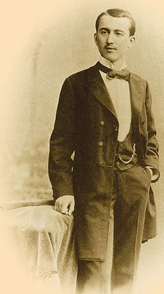

Vanredni profesor primenjene matematike bio je od 1909. do 1920. godine (osim 1914-1918), dok je kao redovni profesor nebeske mehanike radio od 1920. do 1955. (osim 1941-1945) na Univerzitetu u Beogradu. Bio je dekan Filozofskog fakulteta školske 1926/27, pionir u raketnom inženjerstvu, potpredsednik SANU u tri mandata pocev od 1948, direktor Astronomske opservatorije u Beogradu od 1948. do 1951, clan i reosnivac Komisije 7 za nebesku mehaniku Medunarodne astronomske unije od 1948. do 1953. itd.
